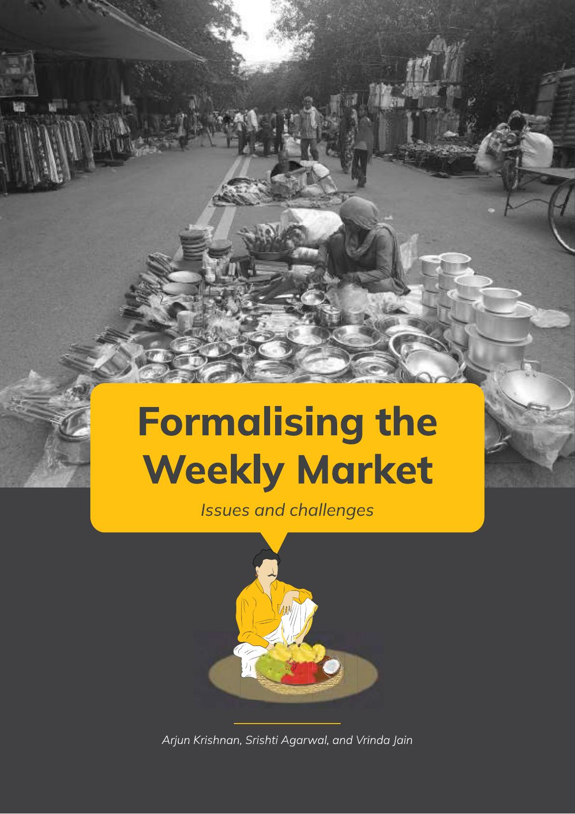

Formalising Delhi’s Weekly Markets
Conducted field research, stakeholder interviews, survey design, and policy analysis across Delhi, India's weekly markets to assess how the Street Vendors Act, 2014 was being implemented in practice. Identified gaps between policy and vendors’ lived experiences and contributed to a published research paper with recommendations.
View project